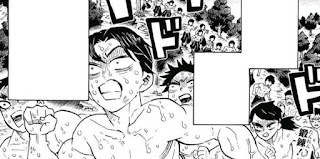

Pilar (Hashira)
Um pilar ou hashira é uma denominação dada aos mais poderosos exterminadores do esquadrão sendo
formado
por 9 pilares que são assimilados a: Água, Chamas, Amor, Serpente, Pedra, Névoa, Vento, Inseto e
Som.
Para tornar-se um Pilar, é necessário que o exterminador tenha matado 50 demônios como um kinoe
ou
que
tenha matado um integrante das 12 luas que são um grupo formado pelos demônios mais poderosos do
exército de Muzan Kibutsuji.

(Ilustração dos 9 Pilares)

Exterminadores participando do treinamento hashira.
O treinamento Hashira
O treino hashira é um árduo treinamento conduzido por um pilar que integra os exterminadores de
baixo
nível para aprimorarem as habilidades físicas e a saúde geral dos mesmos para que assim os
membros
da
organização tenham uma chance maior de vencerem a guerra contra os demônios. Cada pilar conduz
uma
parte
do treinamento sendo divididos em treinos de flexão, treinos de estamina, treinos de
flexibilidade,
treinos de rapidez, treinos de movimentos com espada e treino de reforço muscular. Este treino é
extremamente rígido e intenso e por causa disso muitos dos participantes observam esta sessão de
treinamento como se fosse uma interminável viagem ao inferno mas com algumas exceções de alguns
exterminadores que veem este treino como uma chance de melhorar suas habilidades e aptidão
física.
O treinamento Hashira
O treino hashira é um árduo treinamento conduzido por um pilar que integra os exterminadores de
baixo
nível para aprimorarem as habilidades físicas e a saúde geral dos mesmos para que assim os
membros
da
organização tenham uma chance maior de vencerem a guerra contra os demônios. Cada pilar conduz
uma
parte
do treinamento sendo divididos em treinos de flexão, treinos de estamina, treinos de
flexibilidade,
treinos de rapidez, treinos de movimentos com espada e treino de reforço muscular. Este treino é
extremamente rígido e intenso e por causa disso muitos dos participantes observam esta sessão de
treinamento como se fosse uma interminável viagem ao inferno mas com algumas exceções de alguns
exterminadores que veem este treino como uma chance de melhorar suas habilidades e aptidão
física.

Habilidades adiquiridas com o treinamento